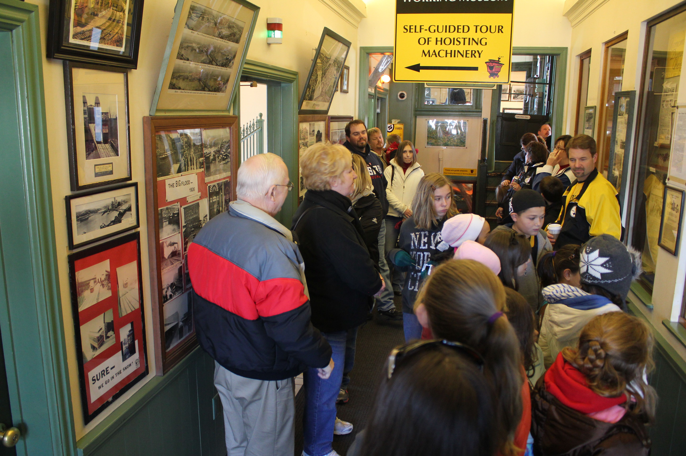
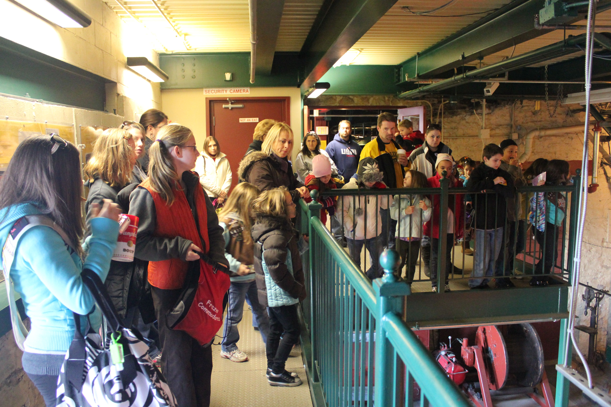
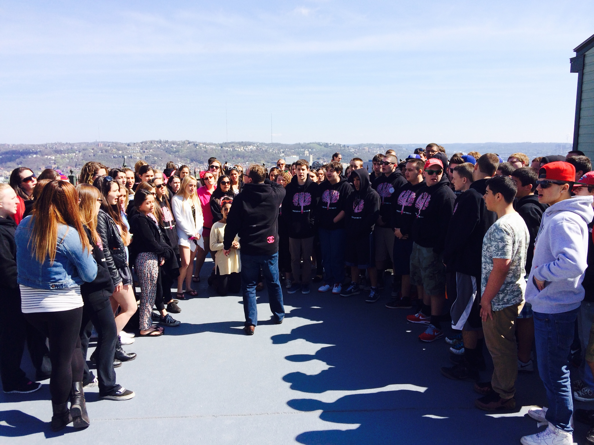
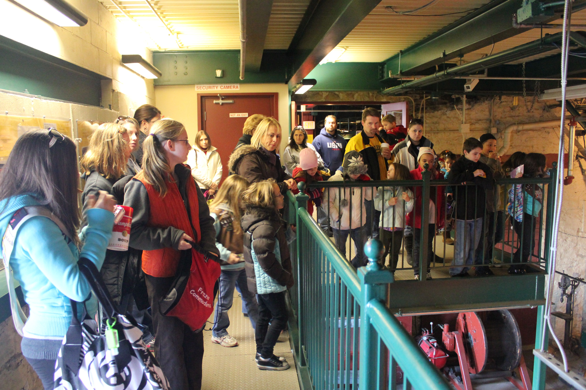
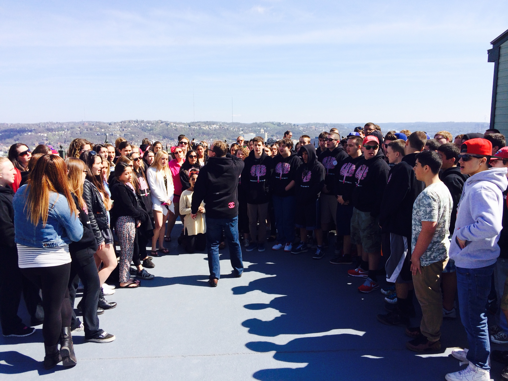
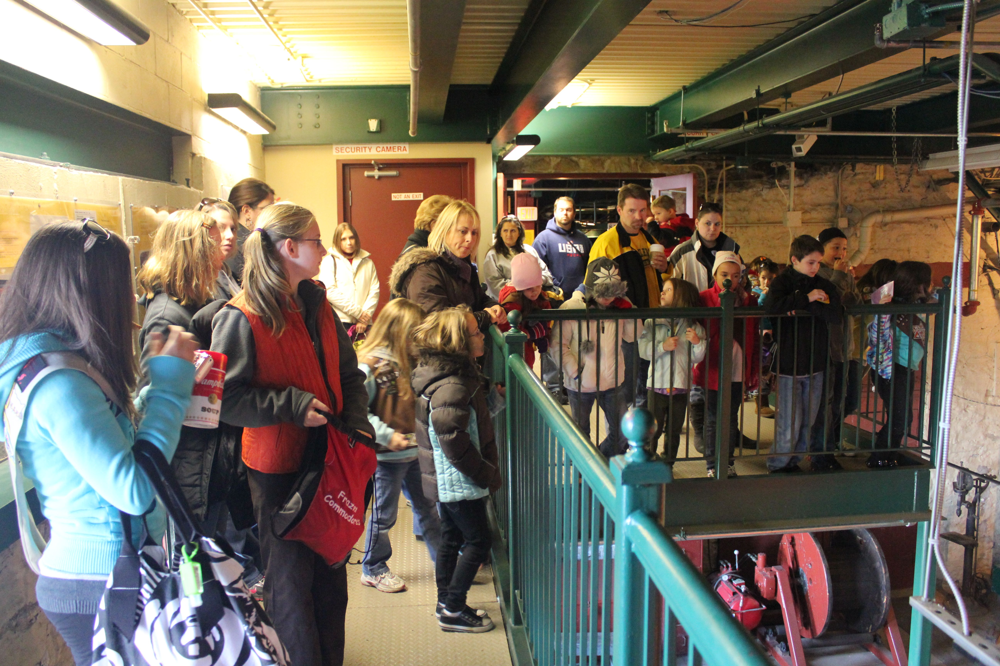
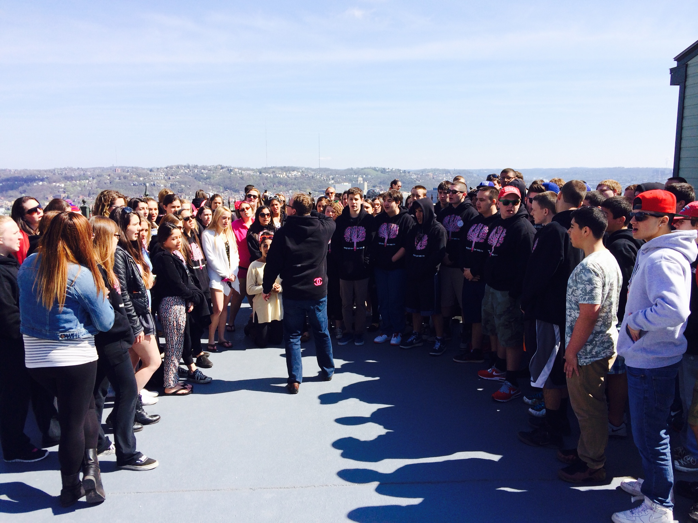

 






Hours
Open 365 Days a Year
Everyday From: 6:30 a.m. to 12:30 a.m.
Tours
Adults (12-64)
$2.50 Each Way or $5.00 Round Trip
Children (6-11)
$1.25 Each Way or $2.50 Round Trip
Adults (Ages 12-64)
$1.75 Each Way or $3.50 Round Trip (group rate)
Children (Ages 6-11)
$1.00 Each Way or $1.75 Round Trip (group rate)
Educational Programs & Tours
The Duquesne Incline offers immersive experiences for students, tourists, and history enthusiasts. There are no reservations or advance tickets. Explore our structured programs below:
Field Trip Programs
A free field trip program is available for students and youth groups of ten or more daily - except Saturdays and Sundays after 12:00 noon due to weekend crowds and limited space. The program includes
- A teacher's lesson packet for students' specific grade level
- A round trip ride on the Duquesne Incline
- A history of inclines in Pittsburgh
- A discussion about Pittsburgh's industrial past
- A visit to the machine room to observe the original hoisting equipment in operation and learn about the engineers who built it
- A panoramic view of Downtown Pittsburgh and The North Shore from our observation deck 400 feet above the three rivers
- A brief history of the French and Indian War from which the city arose
City History Tours
City Tours That Feature The Duquesne Incline
-
Pittsburgh Tours and More - Pittsburgh Movie Locations, Sports, Breweries, Wineries and More.
www.pghtoursandmore.net 412-323-4707 -
Molly's Trolleys
www.mollystrolleyspgh.com 412-281-2055 -
Rivers of Steel
riversofsteel.com 412-464-4020 or 412-381-8687 -
The Pittsburgh Tour Company- Hop on/Hop off Double Decker tour buses from London
www.pghtours.com 412-381-8687